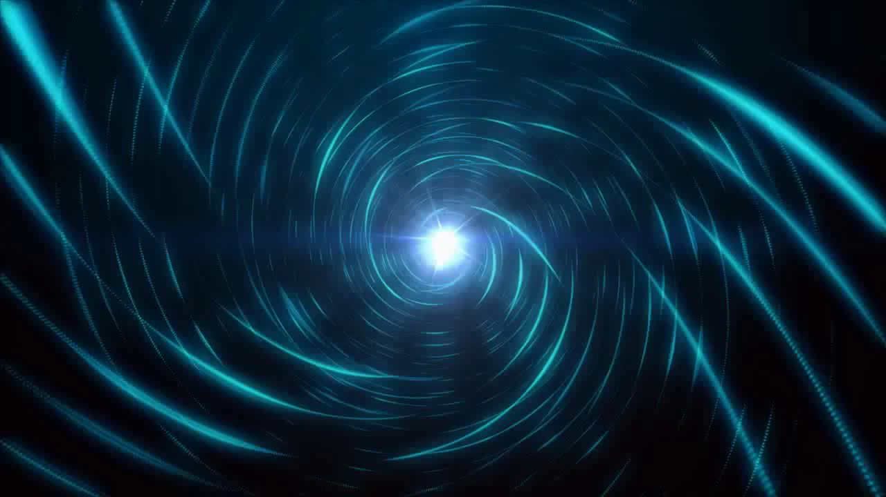

Полёты во времени. Чернобров Вадим Александрович

Хрономиражи: звуки собственных шагов гуляют сами по себе
"Власть над миром подразумевает знания Будущего,
это в свою очередь требует знания законов Времени,
которые знает лишь тот, кто видит Прошлое..."
(Седьмое правило начинающих властителей Мира)
" ...Трусливо озираясь по сторонам, старый
пират торопливо закопал сундук, затем трупы убитых им товарищей и только
тогда впервые за несколько часов присел отдохнуть. Его била дрожь, за
каждым кустом ему мерещился свидетель, который видел все происходящее от
начала до конца. Он попробовал закурить, но не смог — огонек трубки был
бы далеко виден. "Чушь, — произнес пират, стараясь приободрить себя. —
Чушь, — уже почти заорал он, — За сотни миль нет ни одной живой души,
никто... даже Дьявол... НИКОГДА... НИКТО не узнает, где лежит мое
сокровище! Пусть я сдохну завтра, а я сдохну завтра, но это мое, только
мое сокровище!" Неожиданно берег огласил пронзительный крик "Пиастры!
Пиастры!". Почти не целясь, старик выстрелил, на этот раз он не
промахнулся и подстрелил наконец-таки капитанского попугая. Птица,
которая могла быть последним свидетелем, свалилась вниз, и пират
затрясся от дикого хохота"...
Сколько таких кровавых и не только кровавых тайн таит в себе история! Неужели все они после смерти последних свидетелей останутся навеки "белыми пятнами", неужели же справедливость (почти забытое слово) не восторжествует в жизни так же, как это происходит в книжных романах?! Конечно же нет, скажете вы! Во-первых, Бог видит все (правда, часто это довольно слабое утешение). Во-вторых, историки постоянно делают в архивах новые сенсационные находки (но не забывайте — историю пишут победители). И в-третьих, когда-нибудь путешественники в машине времени смогут воочию наблюдать и сравнивать с учебниками все исторические события (но произойдет это не раньше XXI века)...
...
1. МАШИНА ВРЕМЕНИ.
Хрономиражи: звуки собственных шагов гуляют сами по себе
Хрономиражи городов.
Хрономиражи битв.
"Летучие голландцы".
Хрономиражи-"привидения".
Места частых хрономиражей.
Хрономираж в Версале.
Хрономираж Дроссолидес.
Хрономиражи с полным эффектом присутствия.
Осязаемые хрономиражи.
"Запаздывающие шаги".
Видение самих себя в прошлом.
Хрономиражи будущего.
Погоня за хрономиражами: запрыгнуть на подножку колесницы истории.
Погоня за поездом-призраком.
Охота "методом преследования".
Охота "на удачу".
Охота "из засады".
Фотоохота за хрономиражами.
Охота в полном смысле этого слова.
А зачем охотиться?.
Потерявшиеся во времени: верните меня в свой век!!!.
Перемещение во времени людей.
Незначительные скачки людей во времени.
Места, где повторяются незначительные скачки во времени.
Появления "странных людей".
Перемещение во времени предметов.
Иновремяне: герои не нашего времени.
СССР — начало тридцатых...
Древняя история машины времени: гости из послезавтра наследили еще позавчера.
Прилет Хуан-Ди.
"Корабли бессмертных небожителей".
Где и когда был холоп Яшка?.
История машины времени: "они" никуда и не улетали.
Современные свидетельства о связи НЛО и времени.
Современные свидетельства о замедлении времени около НЛО.
Остановка часов после появления НЛО.
Странности в ходе часов вблизи НЛО.
Свидетельства об искривлении пространства около НЛО.
Измерения хода времени на местах посадок НЛО.
Косвенные факты о воздействии НЛО на время.
Косвенные сведения о катастрофах МВ.
Машина времени: Уэллс был прав.
Откуда он знал?.
Работы в области времени после Уэллса.
Работы в области времени в СССР.
Зеркала Козырева.
Спирали Вейника.
Спирали Додонова.
Споры вокруг теории машины времени.
Идеи создания машины времени.
"Подаренные идеи" машины времени.
Машины времени "с человеческим лицом".
Создание прототипов машины времени: где и когда найти точку опоры во времени.
Предыстория постройки МВ.
"Незаконные" электромагнитные волны.
Теоретическая аналоговая модель МВ.
Постройка первой лабораторной установки.
Название для первой установки.
Цели эксперимента.
Конструкция установок.
Эксперименты с прототипами МВ: управление темпом и ходом времени.
Режим работы установок.
Измерение темпа хода времени.
Результат первых экспериментов.
Новые размерности.
Искривление поля времени-пространства.
Полезная нагрузка.
Эксперименты с человеком в МВ: полеты первых темпоронавтов.
Строительство установки "Ловондатр-7".
Эксперименты с животными.
Эксперименты с человеком.
Первые выводы из экспериментов со временем.
Последствия экспериментов с МВ: зрители из другого времени?.
Радиоэхо.
Машина времени и НЛО: как устроена летающая тарелка.
ТТХ НЛО.
Косвенные данные об устройстве НЛО.
Проекты, отвечающие всем указанным ТТХ.
Возможные выводы, следующие из внешних особенностей НЛО.
Возможные выводы о дальности полета различных техногенных НЛО.
Возможные объяснения особенностей полета техногенных НЛО.
Время и техника безопасности: бойтесь странных туманов!!!.
Войны во Времени: велико Время, а отступать некуда!.
Время и самовозгорания: сгорающие от стыда за нас всех?.
Трагедия в Чёртовом логове.
Огонь изнутри.
Архив самовозгораний.
Воспламеняющие глазами?.
Закономерности самовозгораний.
Версии причин самовозгораний.
Самовозгорания и время.
МВ и бессмертие: человеческая вечная мечта — жить вечно.
Время и психология: самое притягательное и самое страшное одновременно.
Ожидание физических болей при хронопутешествиях.
Страх перед опасностью взорвать пространствo.
Страх перед опасностью потеряться во времени.
Страх перед опасностью появиться в "неподходящем" времени.
Страх перед опасностью стать другим в ином времени.
Наказание временем.
Любопытство и романтика хронопутешествий.
Чувство превосходства перед иновремянами-предками.
Отсутствие уважения к иновремянам-потомкам.
Соблазн и желание вмешаться в ход истории.
Обыденность хронопутешествий в будущем.
Образ путешественника во времени изменится со временем.
Машина времени и фальсификации: нереальное в невероятном.
2. ХРОНОНАВИГАЦИЯ
Полеты в прошлое: можно ли расстроить свадьбу родителей Гитлера?.
Кровавые гонки во времени.
Опасность вмешательства.
Неизменяемое прошлое.
Принципы неизменяемости прошлого.
Измененная история неотличима от "настоящей" истории.
Есть ли смотрители истории?.
Структура истории вообще и прошлого в частности.
Правила нахождения в прошлом.
Наблюдения за историей.
Вмешательство в Историю: не раздавите ногой цивилизацию.
Этика вмешательства в Историю: шрам на спине (фантастический рассказ).
Встречи с самим собой: на брудершафт с зеркалом.
Парадокс хронопутешественника.
Парадоксальные встречи.
Маятник времени: почти фантастическая история.
Цикличность времени и истории: новое и недостаточно забытое старое.
Уфологические циклы.
Астрологические циклы.
Циклы истории России.
Циклы истории России по Кошелеву.
Годичные циклы России.
Личностная цикличность.
"Двойники" в истории.
Цикличные повторы судеб.
Земные циклы.
Природные циклы.
Попытки объяснения цикличности.
Полное собрание циклов.
Бифуркационные точки времени: история с приставкой "если".
Поиск и идентификация иновремян: ловля пришельцев на наживку.
Где надо искать иновремян?.
Как достойно и на равных встретить пра-правнуков?.
Сотрудничество с иновремянами.
Цели полетов МВ: клады, тайны, знания и власть.
Правила полетов во времени: на заметку хронопутешественникам.
Контактеры о времени: когда секунды бывают зелеными.
Контакт в Чувашии.
Контакт с Албелликом.
Контактные секретные формулы времени.
Контакты с "душами".
Контакт в Волжском.
Определение Времени: краткие формулировки без формул.
Время и Машина Времени: узор из красивых камушков еще не сложен.
Вместо послесловия.